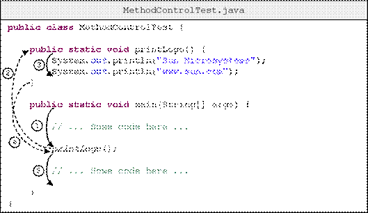
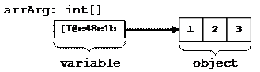
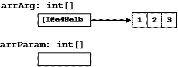
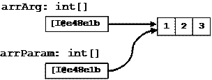
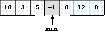
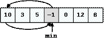
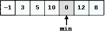
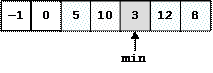
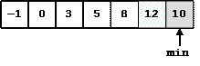
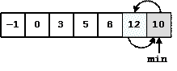

Настоящият текст е част от книгата на Светлин Наков и колектив:
Въведение в програмирането с Java
Можете да изтеглите цялата книга безплатно от www.introprogramming.info.
Настоящият текст е част от книгата на Светлин Наков и колектив:
Можете да изтеглите цялата книга безплатно от www.introprogramming.info.
Николай Василев
В настоящата тема ще се запознаем подробно с това какво е метод и защо трябва да използваме методи. Ще разберем как се декларират методи и какво е сигнатура на метод. След като приключим темата, ще знаем как да създадем собствен метод и съответно как да го използваме (извикваме) в последствие. Ще разберем как можем да използваме параметри в методи и как да върнем резултат от метод. Накрая ще препоръчаме някои утвърдени практики при работата с методи.
Всичко това ще бъде подкрепено с подробно обяснени примери и допълнителни задачи, с които читателят ще може да упражни наученото в тази глава.
В ежедневието ни, при решаването на даден проблем, особено, ако е по-сложен, прилагаме принципа на древните римляни - "Разделяй и владей". Съгласно този принцип, проблемът, който трябва да решим, се разделя на множество подпроблеми. Самостоятелно разгледани, те са по-ясно дефинирани и по-лесно решими, в сравнение с търсенето на решение на изходния проблем като едно цяло. Накрая, от решенията на всички подпроблеми, създаваме решението на цялостния проблем.
По същата аналогия, когато пишем дадена програма, целта ни е с нея да решим конкретна задача. За да го направим ефективно и да улесним работата си, прилагаме принципа "Разделяй и владей". Разбиваме поставената ни задача на подзадачи, разработваме решения на тези подзадачи и накрая ги "сглобяваме" в една програма. Решенията на тези подзадачи наричаме подпрограми (subroutines).
В някои езици за програмиране подпрограмите могат да се срещнат под наименованията функции (functions) или процедури (procedures). В Java, те се наричат методи (methods).
Метод (method) е съставна част от програмата, която решава даден проблем.
В методите се извършва цялата обработка на данни, която програмата трябва да направи, за да реши поставената задача. Те са мястото, където се извършва реалната работа. Затова можем да ги приемем като строителен блок на програмата. Съответно, имайки множество от простички блокчета – отделни методи, можем да създаваме големи програми, с които да решим сложни проблеми. Ето как изглежда един метод за намиране лице на правоъгълник например:
|
public static double getRectagnleArea( double width, double height) { double area = width * height; return area; } |
Има много причини, които ни карат да използваме методи. Ще разгледаме някои от тях и с времето ще се убедите, че методите са нещо, без което не можем, ако искаме да програмираме сериозно.
При създаването на една програма, е добра практика да използваме методи, за да я направим по-добре структурирана и по-лесно четима не само за нас, но и за други хора.
Довод за това е, че за времето, през което съществува една програма, само 20% от усилията, които се заделят за нея, се състоят в създаване и тестване на кода. Останалата част е за поддръжка и добавяне на нови функционалности към началната версия. В повечето случаи, след като веднъж кодът е написан, той не се поддържа и модифицира само от създателя му, но и от други програмисти. Затова е добре той да е добре структуриран и лесно четим.
Друга причина, заради която е добре да използваме методи е, че по този начин избягваме повторението на код. Това е пряко свързано със следващата точка – преизползване на кода.
Добър стил на програмиране е, когато използваме даден код повече от един или два пъти в програмата ни, да го дефинираме като отделен метод, за да можем да го изпълняваме многократно. По този начин освен, че избягваме повторението на код, програмата ни става по-четима и по-добре структурирана.
Преди да продължим по-нататък, ще направим разграничение между три действия свързани със съществуването на един метод – деклариране, имплементация (създаване) и извикване на метод.
Деклариране на метод наричаме регистрирането на метода, за да бъде разпознаван в останалата част на Java-света.
Имплементация (създаване) на метода, е реалното написване на кода, който решава конкретната задача, заради която се създава метода. Този код се съдържа в самия метод.
Извикване е процесът на стартиране на изпълнението, на вече декларирания и създаден метод, от друго място на програмата, където трябва да се реши проблемът, който нашият метод решава.
Преди да се запознаем как можем да декларираме метод, трябва да знаем къде е позволено да го направим.
Въпреки, че формално все още не сме запознати как се декларира клас, от примерите, които сме разглеждали до сега в предходните глави, знаем, че всеки клас има отваряща и затваряща фигурни скоби – "{" и "}", между които пишем програмния код. Повече подробности за това, ще научим в главата "Дефиниране на класове", но го споменаваме тук, тъй като един метод може да съществува само ако е деклариран между отварящата и затварящата скоби на даден клас – "{" и "}". Също така методът, трябва да бъде деклариран извън имплементацията на друг метод (за това малко по-късно).
|
|
Можем да декларираме метод единствено в рамките на даден клас – между отварящата "{" и затварящата "}" му скоби. |
Най-очевидния пример за това е методът main() – винаги го декларираме между отварящата и затварящата скоба на нашия клас, нали?
|
HelloJava.java |
|
public class HelloJava { // Opening brace of the class
// Declaring our method between the class braces public static void main(String[] args) { System.out.println("Hello Java!"); }
} // Closing brace of the class |
Декларирането на метода, представлява регистриране на метода в нашата програма. То става по следния начин:
|
[public] [static] <return_type> <method_name>([<param_list>]) |
Задължителните елементи в декларацията на един метод са:
- Тип на връщаната от метода стойност – <return_type>.
- Име на метода – <method_name>.
- Списък с параметри на метода – <param_list> – съществува само ако метода има нужда от тях в процеса на работата си.
За онагледяване на това, можем да погледнем main() метода в примера HelloJava от предходната секция:
|
public static void main(String[] args) |
При него, типа на връщаната стойност е void (т.е. метода не връща резултат), името му е main, следвано от кръгли скоби, в които има списък с параметри, състоящ се от един параметър – масивът String[] args.
Последователността, в която трябва да се поставят отделните елементи от декларацията на метода е строго определена. Винаги на първо място е типът на връщаната стойност <return_type>, следвана от името на метода <method_name> и накрая, списък с параметри <param_list> ограден с кръгли скоби – "(" и ")".
|
|
При деклариране на метод, спазвайте последователността, в която се описват основните му характеристики: първо тип на връщана стойност, след това име на метода и накрая списък от параметри ограден с кръгли скоби. |
Списъкът от параметри може да е празен (тогава просто пишем "()" след името на метода). Дори методът да няма параметри, кръглите скоби трябва да присъстват в декларацията му.
|
|
Кръглите скоби – "(" и ")", винаги следват името на метода, независимо дали той е с или без параметри. |
За момента, ще пропуснем разглеждането какво е <return_type> и само ще кажем, че на това място трябва да стои ключовата дума void, която указва, че методът не връща никаква стойност. По-късно в тази глава, ще видим какво представлява и какво можем да поставим на нейно място.
Думите public и static в описанието на декларацията по-горе са незадължителни и имат специално предназначение, което ще разгледаме по-късно в тази глава. До края на тази глава ще разглеждаме методи, които винаги имат static в декларацията си. Повече за методи, които не са декларирани като static, ще говорим в главата "Дефиниране на класове".
Преди да продължим с основните елементи от декларацията на метода, трябва да кажем нещо много важно. В обектно-ориентираното програмиране, начинът, по който еднозначно се разпознава един метод е чрез двойката елементи от декларацията му – име на метода и списък от неговите параметри. Тези два елемента определят така наречената спецификация на метода (някъде в литературата се среща и като сигнатура на метода).
Java като език за обектно-ориентирано програмиране, също разпознава еднозначно различните методи, използвайки тяхната спецификация – името на метода <method_name> и списъкът с параметрите на метода – <param_list>.
Трябва да обърнем внимание, че типът на връщаната стойност на един метод е част от декларацията му, но не е част от сигнатурата му.
|
|
Това, което идентифицира един метод, е неговата сигнатура. Връщаният тип не е част от нея. Причината е, че ако два метода се различават само по връщания тип, то не може еднозначно да се идентифицира кой метод трябва да бъде извикан. |
По-подробен пример, защо типа на връщаната стойност не е част от сигнатурата на метода ще разгледаме по-късно в тази глава.
Всеки метод, решава някаква подзадачка от цялостния проблем, с който се занимава програмата ни. Когато създаваме програмата и стигнем до подпроблема, който този метод решава, ние извикаме (стартираме) метода, използвайки името му.
В примера показан по-долу, името на метода е printLogo:
|
public static void printLogo() { System.out.println("Sun Microsystems"); System.out.println("www.sun.com"); } |
Добре е, когато декларираме името на метода, да спазваме правилата за именуване на методи, препоръчани ни от Sun:
- Името на метода трябва да започва с малка буква.
- Трябва да се прилага правилото camelCase, т.е. всяка нова дума, която се долепя в задната част на името на метода, започва с главна буква.
- Имената на методите е добре да бъдат съставени от глагол или от глагол и съществително име.
Нека отбележим, че тези правила не са задължителни, а препоръчителни. Но принципно, ако искаме форматирането на кода ни да е като на всички Java-програмисти по света е добре да спазваме конвенциите на Sun.
Ето няколко примера:
|
getName playMusic setUserName |
Освен това, името на метода трябва да описва неговата цел. Идеята е, ако човек, който не е запознат с програмата ни, прочете името на метода, да добие представа какво прави този метод, без да се налага да разглежда кода му.
|
|
При определяне на името на метод се препоръчва да се спазват следните правила: - Името на метода трябва да описва неговата цел. - Името на метода трябва да започва с малка буква. - Трябва да се прилага правилото camelCase. - Името на метода трябва да е съставено от глагол или от двойка - глагол и съществително име. |
Модификатор (modifier) наричаме ключова дума в езика Java, която дава допълнителна информация на компилатора за даден код.
Модификаторите, с които срещнахме до момента са public и static. Тук ще опишем на кратко какво представляват те. Детайлно обяснение за тях, ще бъде дадено по-късно в главата "Дефиниране на класове".
|
public static void printLogo() { System.out.println("Sun Microsystems"); System.out.println("www.sun.com"); } |
public е специален вид модификатор, наречен модификатор за достъп (access modifier). Той се използва, за да укаже, че извикването на метода може да става от кой да е Java-клас, независимо къде се намира той.
Друг пример за модификатор за достъп, който може да срещнем е модификатора private. Като предназначение, той е противоположен на public, т.е. ако един метод бъде деклариран с модификатор за достъп private, то този метод не може да бъде извикан извън класа, в който е деклариран.
За момента, единственото, което трябва да научим е, че в декларацията си един метод може да има не повече от един модификатор за достъп.
Когато един метод притежава ключовата дума static, в декларацията си, наричаме метода статичен. Това означава, че този метод може да бъде извикан от кой да е друг метод, независимо дали другият метод е статичен или не.
След като декларираме метода, следва да напишем неговата имплементация. Както обяснихме по-горе, имплементацията (създаването) се състои в процеса на написването на кода, който ще бъде изпълнен при извикването на метода. Този код трябва да бъде поставен в тялото на метода.
Тяло на метод наричаме програмния код, който се намира между фигурните скоби "{" и "}", следващи непосредствено декларацията на метода.
|
public static <return_type> <method_name>(<parameters_list>) { // ... code goes here – in the method’s body ... } |
Реалната работа, която методът извършва, се намира именно в тялото на метода. В него трябва да бъде описан алгоритъмът, по който методът решава поставения проблем.
Пример, за тяло на метод сме виждали много пъти, но сега ще изложим отново един:
|
public static void printLogo() { // Method’s body start here System.out.println("Sun Microsystems"); System.out.println("www.sun.com"); } // ... And finishes here |
Преди да приключим със секцията за тяло на метод, трябва отново да обърнем внимание на едно от правилата, къде може да се декларира метод:
|
|
Метод НЕ може да бъде деклариран в тялото на друг метод. |
Когато декларираме променлива в тялото на един метод, я наричаме локална променлива (local variable) за метода. Когато именуваме една променлива трябва да спазваме правилата за идентификатори в Java (вж. глава "Примитивни типове и променливи").
Областта, в която съществува и може да се използва една локална променлива, започва от реда, на който сме я декларирали и стига до затварящата фигурна скоба на тялото метода. Ако след нейното деклариране се опитаме да декларираме друга променлива с нейното име, например:
|
public static void main(String[] args) { int x = 3; int x = 4; } |
Компилаторът няма да ни позволи да направим това, със съобщение подобно на следното:
|
Duplicated variable <variable_name>. |
В нашия случай <variable_name> е името на променливата x.
Блок (block) наричаме код, който се намира между фигурни скоби "{" и "}".
Ако декларираме променлива в блок, тя отново се нарича локална променлива, и областта й на съществуване е от реда, на който бъде декларирана, до затварящата скоба на блока.
Извикване на метод наричаме стартирането на изпълнението на кода, който е описан в тялото на метода.
Извикването на метода става просто като напишем името на метода <method_name>, следвано от кръглите скоби и накрая сложим знака за край на ред – ";":
|
<method_name>(); |
По-късно ще разгледаме и случая, когато извикваме метод, който има списък с параметри.
За да имаме ясна представа за извикването, ще покажем как бихме извикали метода, който използвахме в примерите по-горе – printLogo():
|
printLogo(); |
Изходът от изпълнението на метода ще бъде:
|
Sun Microsystems |
Когато изпълняваме един метод, той притежава контрола над програмата. Ако в тялото му обаче, извикаме друг метод, то тогава извикващия метод, ще предаде контрола на извиквания метод. След като извикваният метод приключи изпълнението си, той ще върне контрола на метода, който го е извикал. Изпълнението на първия метод ще продължи на следващия ред.
Например, нека от метода main() извикаме метода printLogo():

Първо ще се изпълни кодът от метода main(), който е означен с (1), след това контрола на програмата ще се предаде на метода printLogo() – пунктираната стрелка (2). След това, ще се изпълни кода в метода printLogo(), номериран с (3). След приключване на работата на метода printLogo() управлението на програмата ще бъде върнато на метода main() – пунктираната стрелка (4). Изпълнението на метода main() ще продължи от реда, който следва извикването на метода printLogo() – стрелката маркирана с (5).
Един метод може да бъде извикван от следните места:
- От главния метод на програмата – main():
|
public static void main(String[] args) { printLogo(); } |
- От някой друг метод:
|
public static void printLogo() { System.out.println("Sun Microsystems"); System.out.println("www.sun.com"); }
public static void printCompanyInformation() {
// Invoking the printLogo() method printLogo();
System.out.println("Address: Elm Str."); } |
- Методът може да бъде извикан в собственото си тяло. Това се нарича рекурсия (recursion), но ще се запознаем по-подробно с нея в следващата глава – "Рекурсия".
Когато пишем на Java, е позволено последователността, в която извикваме метода и го декларираме да е обърната, т.е. във файла, в който сме декларирали метода, извикването, да предхожда неговата декларация и имплементация.
За да стане по-нагледно, нека разгледаме следния пример:
|
public static void main(String[] args) { // .. printLogo(); // .. }
public static void printLogo() { System.out.println("Sun Microsystems"); System.out.println("www.sun.com"); } |
Ако създадем клас, който съдържа горния код, ще се убедим, че независимо че извикването на метода е на по-горен ред от декларацията на метода, програмата ще се компилира и изпълни без никакъв проблем. В някои други езици за програмиране, като например Паскал, извикването на метод, който е дефиниран по-надолу от мястото на извикването му, не е позволено.
|
|
Ако един метод бива извикван в същия клас, където е деклариран и имплементиран, то той може да бъде извикан на ред по-горен от реда на декларацията му. |
Много често, за да реши даден проблем, методът се нуждае от допълнителна информация, която зависи от контекста, в който той се изпълнява.
Например, ако имаме метод, който намира лице на квадрат, в тялото му е описан алгоритъма, по който се намира лицето (формулата: S = a2). Въпреки това, при пресмятането на лицето на всеки отделен квадрат, методът ни ще се нуждае от дължината на страната му, за да изчисли конкретното лице спрямо нея. Затова, ние трябва да му я подадем някак.
За да можем да подадем информация на даден метод, която е нужна за неговата работа, използваме списък от параметри. Този списък, поставяме между кръглите скоби в декларацията на метода, след името му:
|
public static <return_type> <method_name>(<parameters_list>) { // Method’s body } |
Списъкът от параметри <parameters_list>, представлява списък от нула или повече декларации на променливи, разделени със запетая, които ще бъдат използвани в процеса на работа на метода:
<parameters_list> = [<type1> <name1>[, <typei> <namei>]], където i = 2, 3,... |
Когато създаваме метода и ни трябва дадена информация за реализирането на алгоритъма, избираме тази променлива от списъка от параметри, чийто тип <typei> ни е нужен и я използваме в метода съответно чрез името й <namei>.
Типът на параметрите в списъка може да бъде различен. Той може да бъде както примитивни типове – int, double, ... така и обекти (например String или масиви – int[], double[], String[], ...).
За да добием по-ясна представа, нека модифицираме примера, който извежда логото на компанията "Sun Microsystems" по следния начин:
|
public static void printLogo(String logo) { System.out.println(logo); } |
По този начин, нашият метод вече няма да извежда само "Sun Microsystems", като резултат от изпълнението си, но логото на всяка компания, чието име подадем като параметър от тип String. В примера виждаме също как използваме информацията подадена ни в списъка от параметри – променливата logo, дефинирана в списъка от параметри, се използва в тялото на метода чрез името, с което сме я дефинирали.
По-горе казахме, че когато е нужно, можем да подаваме като параметри на метода и масиви – int[], double[], String[], ... Нека в тази връзка разгледаме друг пример.
Ако сме в книжарница и искаме да пресметнем сумата, която дължим за всички книги, които желаем да закупим, можем да си създадем метод, който приема цените на отделните книги като масив от тип double[] и връща общата им стойност, която трябва да заплатим на продавача:
|
public static void printTotalAmountForBooks(double[] prices) { double totalAmount = 0;
for (double singleBookPrice : prices) { totalAmount += singleBookPrice; } System.out.println("The total amount of all books is: " + totalAmount); } |
Когато декларираме метод с параметри, целта ни е всеки път, когато извикваме този метод, работата му да се променя в зависимост от входните данни. С други думи, алгоритъмът, който ще опишем в метода, ще бъде един, но крайният резултат ще бъде различен, в зависимост каква информация сме подали на метода чрез списъка от параметри.
|
|
Когато методът ни приема параметри, поведението му, зависи от тях. |
За да стане ясно как поведението (изпълнението) на метода зависи от входните параметри, нека разгледаме следния метод, на който подаваме едно цяло число (от тип int), и в зависимост от това, дали числото е положително, отрицателно или нула, съответно той извежда в конзолата – "Positive", "Negative" или "Zero":
|
public static void printSign(int number) { if (number > 0) { System.out.println("Positive"); } else if (number < 0) { System.out.println("Negative"); } else { System.out.println("Zero"); } } |
До сега разглеждахме примери, в които методите имат списък от параметри, който се състои от един единствен параметър. Когато декларираме метод обаче, той може да бъде има толкова параметри, колкото са му необходими.
Например, когато търсим по-голямото от две числа, ние подаваме два параметъра:
|
public static void printMax(float number1, float number2) { float max = number1; if (number2 > number1) { max = number2; } System.out.println("Maximal number: " + max); } |
Когато в списъка с параметри декларираме повече от един параметър от един и същ тип, трябва да знаем, че не можем да използваме съкратения запис за деклариране на променливи от един и същ тип, както е позволено в самото тяло на метода:
|
float var1, var2; |
Винаги трябва да указваме типа на параметъра в списъка с параметри на метода, независимо че някой от съседните му параметри е от същия тип.
Например, тази декларация на метод е неправилна:
|
public static void printMax(float var1, var2) |
Съответно, правилният начин е:
|
public static void printMax(float var1, float var2) |
Извикването на метод с много параметри става по същия начин, по който извиквахме на метод без параметри. Разликата е, че между кръглите скоби, след името на метода, поставяме стойности. Тези стойности ще бъдат присвоени на съответните параметри от декларацията на метода и при изпълнението си, метода ще работи с тях.
Ето няколко примера на извикване на методи с параметри:
|
printSign(-5); printSign(balance);
printMax(100, 200); |
Преди да продължим, трябва да направим едно разграничение между наименованията на параметрите в списъка от параметри в декларацията на метода и стойностите, които подаваме при извикването на метода.
За по-голяма яснота, при декларирането на метода, елементите на списъка от параметрите му, ще наричаме параметри (някъде в литературата могат да се срещнат също като "формални параметри").
По време на извикване на метода, стойностите, които подаваме на метода, наричаме аргументи (някъде могат да се срещнат под понятието "фактически параметри").
С други думи, елементите на списъка от параметри var1 и var2, наричаме параметри:
|
public static void printMax(float var1, float var2) |
Съответно стойностите, при извикването на метода -23.5 и 100, наричаме аргументи:
|
printMax(100, -23.5); |
Както току-що научихме, когато в Java подадем като аргумент на метод дадена променлива, стойността й се копира в параметъра от декларацията на метода. След това, копието ще бъде използвано в тялото на метода. Има, обаче, една особеност.
Когато съответният параметър от декларацията на метода е от примитивен тип, това практически не оказва никакво влияние на кода след извикването на метода.
Например, ако имаме следния метод:
|
public static void printNumber(int numberParam) {
// Modifying the primitive-type parameter numberParam = 5;
System.out.println("in printNumber() method, after the " + "modification, numberParam is: " + numberParam); } |
Извиквайки го от метода main():
|
public static void main(String[] args) { int numberArg = 3;
printNumber(numberArg); // Copying the value 3 of the // argument numberArg to the // parameter numberParam
System.out.println("in the main() method number is: " + numberArg); } |
Стойността 3 на променливата numberArg, се копира в параметъра numberParam. След като бъде извикан методът printNumber(), на параметъра numberParam се присвоява стойността 5. Това не рефлектира върху стойността на променливата numberArg, тъй като при извикването на метода, в numberParam се пази копие на стойността на подадения аргумент. Затова, методът printNumber() отпечатва числото 5. Съответно, след извикването на метода printNumber(), в метода main() отпечатваме стойността на променливата numberArg и виждаме, че тя не е променена. Ето и изходът от изпълнението на горния код:
|
in printNumber() method, after the modification numberParam is:5 in the main() method number is: 3 |
Когато трябва да декларираме (и съответно извикаме) метод, чийто параметри са от референтен тип (например масиви), трябва да бъдем много внимателни.
Преди да обясним защо, нека припомним нещо от главата "Масиви". Масивът, като всеки референтен тип, се състои от променлива (референция) и стойност – реалната информация в паметта на компютъра (нека я наречем обект). Съответно в нашия случай обектът представлява реалният масив от елементи. Променливата пази адреса на обекта (елементите на масива) в паметта:

Когато оперираме с масиви, винаги го правим чрез променливата, с която сме ги декларирали. Така е и с всеки референтен тип. Следователно, когато подаваме аргумент от референтен тип, стойността, която е записана в променливата-аргумент, се копира в променливата, която е параметър в списъка от параметри на метода. Но какво става с обекта (реалния масив от елементи)? Копира ли се и той или не?
За да бъде по-нагледно обяснението, нека използваме следния пример: имаме метод modifyArr(), който модифицира първия елемент на подаден му като параметър масив, като го реинициализира със стойност 5 и след това отпечатва елементите на масива, оградени в квадратни скоби и разделени със запетайки:
|
public static void modifyArr(int[] arrParam) { arrParam[0] = 5;
System.out.print("In modifyArr() the param is: "); System.out.println(Arrays.toString(arrParam)); } |
Съответно, декларираме и метод main(), от който извикваме новосъздадения метод modifyArr():
|
public static void main(String[] args) { int[] arrArg = new int[] { 1, 2, 3 };
System.out.print("Before modifyArr() the argument is: "); System.out.println(Arrays.toString(arrArg));
// Modifying the array's argument modifyArr(arrArg);
System.out.print("After modifyArr() the argument is: "); System.out.println(Arrays.toString(arrArg)); } |
Какъв ще е резултатът от изпълнението на този код? Нека погледнем:
|
Before modifyArr() the argument is: [1, 2, 3] In modifyArr() the param is: [5, 2, 3] After modifyArr() the argument is: [5, 2, 3] |
Забелязваме, че след изпълнението на метода modifyArr(), масивът към който променливата arrArg пази референция, не е [1,2,3], а е [5,2,3]. Какво значи това?
Причината за този резултат е, че при подаването на аргумент от референтен тип, се копира единствено стойността на променливата, която пази референция към обекта, но не се прави копие на самия обект.
|
|
При подаване на аргументи от референтен тип се копира само стойността на променливата, която пази референция към обекта в паметта, но не и самият обект. |
Нека онагледим казаното с няколко схеми, разглеждайки отново нашия пример. Преди извикването на метода modifyArr(), стойността на параметъра arrParam е неопределена и той не пази референция към никакъв конкретен обект (никакъв реален масив):

По време на извикването на modifyArr(), стойността, която е запазена в аргумента arrArg, се копира в параметъра arrParam:
По този начин, копирайки референцията към елементите на масива в паметта от аргумента в параметъра, ние указваме на параметъра да "сочи" към същия обект, към който "сочи" и аргументът:

И тъкмо това е моментът, за който трябва да сме внимателни, защото, ако извикания метод модифицира обекта, към който му е подадена референция, това може да повлияе на изпълнението на кода, който следва след изпълнението на метода (както видяхме в нашия пример – методът printArr() не отпечата масива, който бяхме очаквали).
Това е разликата между подаването на аргументи от примитивен и референтен тип.
Когато извикваме метод, можем да подаваме цели изрази, като аргументи. Когато правим това, Java пресмята стойностите на тези изрази и по време на изпълнение (а когато е възможно и по време на компилация) заменя самия израз с пресметнатия резултат в извикването на метода. Например:
|
printSign(2 + 3);
float oldQuantity = 3; float quantity = 2; printMax(oldQuantity * 5, quantity * 2); |
Съответно резултатът от изпълнението на тези методи е:
|
Positive Maximal number: 15.0 |
Когато извикваме метод с параметри, трябва да спазваме някои определени правила, които ще обясним в следващите няколко подсекции.
Трябва да знаем, че можем да подаваме аргументи, които са съвместими по тип с типа, с който е деклариран съответния параметър в списъка от параметри на метода.
Например, ако параметърът, който методът очаква в декларацията си, е от тип float, при извикването на метода, може да подадем стойност, която е от тип int. Тя ще бъде преобразувана от компилатора до стойност от тип float и едва тогава ще бъде подадена на метода и той ще бъде изпълнен:
|
public static void printNumber(float number) { System.out.println("The float number is: " + number); }
public static void main(String[] args) { printNumber(5); } |
В примера, при извикването на метода printNumber() в метода main(), първо целочисления литерал 5, който по подразбиране е от тип int, се преобразува до съответната стойност с десетична запетая 5f. Така преобразувана, тази стойност се подава на метода printNumber().
Както предполагаме, изходът от изпълнението на този код е:
|
The float number is: 5.0 |
Резултатът от пресмятането на някакъв израз, подаден като аргумент, трябва да е от същия тип, какъвто е типът на параметъра в декларацията на метода или от съвместим с него тип (вж. горната точка).
Например, ако се изисква параметър от тип float, е позволено стойността от пресмятането на израза да е например от тип int. Т.е. в горния пример, ако вместо printNumber(5), извикаме метода, като на мястото на 5, поставим например израза 2+3, резултатът от пресмятането на този израз, трябва да е от тип float (който метода очаква), или тип, който може да се преобразува до float безпроблемно (в нашия случай това е int). Нека леко модифицираме метода main() от предходната точка:
|
public static void main(String[] args) { printNumber(2 + 3); } |
Съответно, сумирането ще бъде извършено и целочисления резултат 5, ще бъде преобразуван до еквивалента му с плаваща запетая 5f, след което ще бъде извикан метода printNumber(). Резултатът отново ще бъде:
|
The float number is: 5.0 |
Стойностите, които се подават на метода при неговото извикване, трябва като типове, да са в същата последователност, в каквато са параметрите на метода при неговата декларация. Това е свързано със спецификацията (сигнатурата) на метода, за която говорихме по-горе.
За да стане по-ясно, нека разгледаме следния пример – нека имаме метод printNameAndAge(), който в декларацията си има списък от параметри, които са съответно от тип String и int, точно в тази последователност:
|
Person.java |
|
public class Person { public static void printNameAndAge(String name, int age) { System.out.println( "I am " + name + ", " + age + " year(s) old."); } } |
Нека към нашия клас добавим метод main(), в който да извикаме нашия метод printNameAndAge(), като се опитаме да му подадем аргументи, които вместо "Pesho" и 25, са в обратна последователност като типове – 25 и "Pesho:
|
public static void main(String[] args) { printNameAndAge(24, "Pesho"); // Wrong sequence of arguments } |
Компилаторът няма да намери метод, който се казва printNameAndAge и в същото време, има параметри, които са последователно от тип int и String. Затова, той ще ни уведоми за грешка:
|
The method printNameAndAge(int, String) in the type Person is not applicable for the arguments (String, int) |
До момента, разглеждахме деклариране на методи, при което декларираме списък от параметри на метода, при който, когато извикваме нашия метод, аргументите, които подаваме трябва да са същият брой, какъвто е броят на параметрите в декларацията му.
Сега ще разгледаме деклариране на методи, която позволява по време на извикване на метода, броят на аргументите, които биват подавани, да е различен, в зависимост от нуждите на извикващия код.
Нека вземем примера, който разгледахме по-горе, в който пресмятаме сумата, която заплащаме на продавача в книжарницата след като сме си избрали книги. В него, като параметър на метода подавахме масив от тип double[], в който се съхраняват цените на избраните от нас книги:
|
public static void printTotalAmountForBooks(double[] prices) { double totalAmount = 0;
for (double singleBookPrice : prices) { totalAmount += singleBookPrice; } System.out.println("The total amount of all books is: " + totalAmount); } |
Така дефиниран, този метод предполага, че винаги преди да го извикаме, ще създадем масив с числа от тип double и ще го инициализираме с някакви стойности.
След създаването на Java 5.0, е възможно, когато трябва да подадем някакъв списък от стойности от един и същ тип на даден метод, вместо да го правим като подаваме масив, който съдържа тези стойности, да ги подадем на метода при извикването му, като аргументи, разделени със запетая.
Например, в нашия случай с книгите, вместо да създаваме масив, специално заради извикването на този метод:
|
double[] prices = new double[] { 3, 2.5 }; printTotalAmountForBooks(prices); |
Можем директно да подадем списъка с цените на книгите, като аргументи на метода:
|
printTotalAmountForBooks(3, 2.5); printTotalAmountForBooks(3, 5.1, 10, 4.5); |
Този тип извикване на метода обаче е възможно само ако сме декларирали метода си, като метод, който приема променлив брой аргументи (var-args).
Формално декларацията на метод с променлив брой аргументи е същата, каквато е декларацията на всеки един метод:
|
public static <return_type> <method_name>(<parameters_list>) { // Method’s body } |
Разликата е, че <parameters_list> се декларира по следния начин:
<parameters_list> = [<type1> <name1>[, <typei> <namei>], <va_type>... <va_name>] където i= 2, 3, ... |
Последният елемент от декларацията на списъка – <va_name>, е този, който позволява подаването на произволен брой аргументи от типа <va_type>, при всяко извикване на метода.
При декларацията на този елемент, след типа му, които трябва да подадем – <va_type>, трябва да добавим три точки: "<va_type>...". По подобие на останалите типове на параметри в списъка от параметри на метода, <va_type> може да бъде както примитивен тип, така и референтен.
Правилата и особеностите за останалите елементи от списъка с параметри на метода, предхождащи var-args параметъра <va_name>, са същите, каквито ги разгледахме по-горе в тази глава.
За да стане по-ясно казаното до тук, нека разгледаме още един пример:
|
public static long calcSum(int ... elements) { long sum = 0; for (int element : elements) { sum += element; } return sum; }
public static void main(String[] args) { long sum = calcSum(2, 5); System.out.println(sum);
long sum2 = calcSum(4, 0, -2, 12); System.out.println(sum2);
long sum3 = calcSum(); System.out.println(sum3); } |
Примерът сумира числа, като техният брой не е предварително известен. Методът може да бъде извикан с един, два или повече параметъра, а също и без параметри. Ако изпълним примера, ще получим следния резултат:
|
7 14 0 |
Параметърът от формалната дефиниция по-горе, който позволява подаването на променлив брой аргументи при извикването на метода – <va_name>, всъщност е име на масив от тип <va_type>. При извикването на метода, аргументите от тип <va_type> или тип съвместим с него, които подаваме на метода, (независимо от броя им) ще бъдат съхранени в този масив. След това те ще бъдат използвани в тялото на метода. Достъпът и работата до тези елементи става по тривиалния начин, по който работим с масиви.
За да стане по-ясно, нека преработим метода, който пресмята сумата на избраните от нас книги, да приема произволен брой аргументи:
|
public static void printTotalAmountForBooks(double... prices) { double totalAmount = 0;
for (double singleBookPrice : prices) { totalAmount += singleBookPrice; } System.out.println("The total amount of all books is: " + totalAmount); } |
Виждаме, че единствената промяна бе да сменим декларацията на масива prices да бъде double..., а не double[]. Въпреки това, в тялото на нашия метод, prices отново е масив от тип double[], който използваме по познатия ни начин в тялото на метода.
Сега можем да извикаме нашия метод, без да декларираме предварително масив от числа, който да подаваме като аргумент на метода:
|
public static void main(String[] args) {
printTotalAmountForBooks(3, 2.5);
printTotalAmountForBooks(1, 2, 3.5, 7.5); } |
Съответно резултатът от двете извиквания на метода ще бъде:
|
The total amount of all books is: 5.5 The total amount of all books is: 14.0 |
Както вече се досещаме, тъй като сам по себе си prices е масив, можем да декларираме и инициализираме масив преди извикването на нашия метод и да го подадем този масив като стойност:
|
public static void main(String[] args) {
double[] prices = new double[] { 3, 2.5 };
// Passing initialized array as var-arg: printTotalAmountForBooks(prices); } |
Това е напълно легално и резултатът от изпълнението на този код ще е следният:
|
The total amount of all books is: 5.5 |
Един метод, който може да приема произволен брой аргументи, може да има и други параметри в списъка си от параметри.
Например, следният метод, приема като първи параметър елемент от тип String, а след това нула или повече елементи от тип int:
|
public static void doSth(String strParam, int... x) { } |
Особеното, на което трябва да обърнем внимание е, че елементът от списъка от параметри в дефиницията на метода, който позволява подаването на произволен брой аргументи, независимо от броя на останалите параметри, трябва да е винаги на последно място.
|
|
Елементът от списъка от параметри на един метод, който позволява подаването на произволен брой аргументи при извикването на метода, трябва да се декларира винаги на последно място в списъка от параметри на метода. |
Ако се опитаме да поставим декларацията на var-args параметъра x, от последния пример, да не бъде на последно място в списъка от параметри на метода:
|
public static void doSth(int... x, String strParam) { } |
Компилаторът ще изведе следното съобщение за грешка:
|
The variable argument type int of the method doSth must be the last parameter |
Също така, трябва да знаем, че в декларацията на един метод не може да имаме повече от един параметър, който позволява подаването на променлив брой аргументи при извикването на метода. С други думи, ако се опитаме да компилираме следната декларация на метод:
|
public static void doSth(int... x, String... z) {} |
Компилаторът ще изведе отново познатото съобщение за грешка:
|
The variable argument type int of the method doSth must be the last parameter |
Това правило е частен случай на правилото за позицията на var-args параметъра – да бъде на последно място в списъка от параметри.
След като се запознахме с декларацията и извикването на методи с променлив брой аргументи и разбрахме същността им, може би възниква въпроса, какво ще стане, ако не подадем нито един елемент на такъв метод по време на извикването му?
Например, какъв ще е резултатът от изпълнението на нашия метод за пресмятане цената на избраните от нас книги, в случая, когато не сме си харесали нито една книга:
|
public static void main(String[] args) { printTotalAmountForBooks(); } |
Виждаме, че компилацията на този код минава без проблеми и след изпълнението резултатът е следният:
|
The total amount of all books is: 0.0 |
Това е така, защото, въпреки че не сме подали нито една стойност на нашия метод, при извикването на метода, масивът double... prices е създаден, но няма нито един елемент.
Това е добре да бъде запомнено, тъй като дори да няма подадени стойности, Java се грижи да инициализира масива, в който се съхраняват променливия брой аргументи.
Имайки предвид как дефинираме методи с променлив брой аргументи, можем да запишем добре познатият ни main() метод по следния начин:
|
public static void main(String... args) { // Method body comes here } |
Горната дефиниция е напълно валидна и се приема от компилатора.
Когато декларираме един метод, чието име съвпада с името на друг метод, но сигнатурите на двата метода се различават по списъка от параметри (броя на елементите в него или подредбата им), казваме, че имаме различни варианти на този метод (method overloading).
Например, ако си представим, че имаме задача да напишем програма, която изографисва букви и цифри. Съответно можем да си представим, че нашата програма, може да има методите за изографисване съответно на низове drawString(String string), цели числа – drawInt(int number), десетични числа – drawFloat(float number) и т.н.:
|
public static void drawString(String string) { // Draw string }
public static void drawInt(int number) { // Draw integer }
public static void drawFloat(float number) { // Draw float number } |
Но също така можем да си създадем съответно само варианти на един метод – draw(…), който приема различни типове параметри, в зависимост от това, какво искаме изографисаме:
|
public static void draw(String str) { // Draw string }
public static void draw(int number) { // Draw integer }
public static void draw(float number) { // Draw float number } |
Както казахме по-горе, за спецификацията (сигнатурата) на един метод, в Java, единствените елементи от списъка с параметри, които имат значение, са типовете на параметрите и последователността, в която са изброени. Имената на параметрите нямат значение за еднозначното деклариране на метода.
|
|
За еднозначното деклариране на метод в Java, по отношение на списъка с параметри на метода, единствено имат значение: - типът на параметъра - последователността на типовете в списъка от параметри Имената на параметрите не се вземат под внимание. |
Например за Java, следните две декларации, са декларации на един и същ метод, тъй като типовете на параметрите в списъка от параметри са едни и същи – int и float, независимо от имената на променливите, които сме поставили – param1 и param2 или arg1 и arg2:
|
public static void doSomething(int param1, float param2) public static void doSomething(int arg1, float arg2) |
Ако въпреки всичко, декларираме два метода в един и същ клас, по този начин, компилаторът ще изведе съобщение за грешка, подобно на следното:
|
Duplicate method doSomething(int, float) in type <the_name_of_ |
Където <the_name_of_your_class> е името на класа, в който се опитваме да декларираме методите.
Ако обаче в примера, който разгледахме, някои от параметрите на една и съща позиция в списъка от параметри са от различен тип, тогава за Java, това са два напълно различни метода, или по-точно, варианти на един метод с даденото име.
Например, ако във втория метод, вторият параметър от списъка на единия от методите – float arg2, го декларираме да не бъде от тип float, а int, тогава това са два различни метода с различна спецификация – doSomething(int, float) и doSomething(int, int). Вторият елемент от сигнатурата им – списъкът от параметри, е напълно различен, тъй като типовете на вторите им елементи от списъка са различни:
|
public static void doSomething(int arg1, float arg2)
public static void doSomething(int param1, int param2) |
В този случай, дори да поставим едни и същи имена на параметрите в списъка, компилаторът ще ги приеме, тъй като за него това са различни методи:
|
public static void doSomething(int param1, float param2)
public static void doSomething(int param1, int param2) |
Компилаторът отново "няма възражения", ако отново декларираме вариант на метод, но този път вместо да подменяме типа на втория параметър, просто разменим местата на параметрите на втория метод:
|
public static void doSomething(int param1, float param2)
public static void doSomething(float param2, int param1) |
Тъй като последователността на типовете на параметрите в списъка с параметри е различна, съответно и спецификациите на методите са различни. Щом списъците с параметри са различни, еднаквите имена (doSomething) нямат отношение към еднозначното деклариране на методите в нашия клас – имаме различни сигнатури.
Искаме да напишем програма, която отпечатва триъгълници, като тези, показани по-долу:
|
1 1 1 2 1 2 1 2 3 1 2 3 1 2 3 4 1 2 3 4 1 2 3 4 5 n=5 -> 1 2 3 4 5 n=6 -> 1 2 3 4 5 6 1 2 3 4 1 2 3 4 5 1 2 3 1 2 3 4 1 2 1 2 3 1 1 2 1 |
Нека разгледаме едно възможно решение и обясним как работи то:
|
Triangle.java |
|
import java.util.Scanner;
public class Triangle {
public static void main(String[] args) {
// Entering the value of the variable n System.out.print("n = "); Scanner input = new Scanner(System.in); int n = input.nextInt(); System.out.println();
// Printing the upper part of the triangle for (int line = 1; line <= n; line++) { printLine(1, line); }
// Printing the bottom part of the triangle // that is under the longest line for (int line = n - 1; line >= 1; line--) { printLine(1, line); } }
private static void printLine(int start, int end) { for (int i = start; i <= end; i++) { System.out.print(" " + i); } System.out.println(); } } |
Тъй като, можем да печатаме в конзолата ред по ред, разглеждаме триъгълниците, като съставени от редове (а не от колони). Следователно, за да ги изведем в конзолата, трябва да имаме средство, което извежда редовете на триъгълниците. За целта, създаваме метода printLine().
В него, с помощта на цикъл for, отпечатваме в конзолата редица от последователни числа. Първото число от тази редица е първия параметър в списъка от параметри на метода – променливата start. Последният елемент на редицата е числото, подадено на метода, като втори параметър (именуван с end) в списъка с параметри.
Забелязваме, че тъй като числата са последователни, дължината (броя числа) на всеки ред, съответства на разликата между втория параметър end и първия – start, от списъка с параметри на метода (това ще ни послужи малко по-късно, когато конструираме триъгълниците).
След това създаваме алгоритъмът за отпечатването на триъгълниците, като цялостни фигури, в метода main(). Чрез класа Scanner въвеждаме стойността на променливата n и извеждаме празен ред.
След това, в два последователни for-цикъла конструираме триъгълника, който трябва да се изведе, за даденото n. В първия цикъл отпечатваме последователно всички редове от горната част на триъгълника до средния – най-дълъг ред, включително. Във втория цикъл, отпечатваме редовете на триъгълника, които трябва да се изведат под средния – най-дълъг ред.
Както отбелязахме по-горе, номерът на реда, съответства на броя на елементи (числа) намиращи се на съответния ред. И тъй като винаги започваме от числото 1, номерът на реда, в горната част от триъгълника, винаги ще е равен на последния елемент на редицата, която трябва да се отпечата на дадения ред. Следователно, можем да използваме това при извикването на метода printLine(), тъй като той изисква точно тези параметри за изпълнението на задачата си.
Също ни прави впечатление, че броят на елементите на редиците, се увеличава с единица и съответно, последният елемент на всяка по-долна редица, трябва да е с единица по-голям от последния елемент на редицата от предходния ред. Затова, при всяко "завъртане" на първия for-цикъл, подаваме на метода printLine(), като първи параметър 1, а като втори – текущата стойност на променливата line. Тъй като при всяко изпълнение на тялото на цикъла line се увеличава с единица, на при всяка итерация методът printLine() ще отпечатва редица с един елемент повече от предходния ред.
При втория цикъл, който отпечатва долната част на триъгълника, следваме обратната логика. Колкото по-надолу печатаме, редиците трябва да се смаляват с по един елемент и съответно, последния елемент на всяка редица, трябва да са с единица по-малък от последния елемент на редицата от предходния ред. От тук задаваме началното условие за стойността на променливата line във втория цикъл: line=n-1. След всяко завъртане на цикъла намаляваме стойността на line с единица и я подаваме като втори параметър на printLine().
Една оптимизация, която можем да направим е да изнесем логиката, която отпечатва един триъгълник в отделен метод. Забелязваме, че логически, печатането на триъгълник е ясно обособено, затова можем да декларираме метод с един параметър (стойността, която въвеждаме от клавиатурата) и да го извикаме в метода main():
|
public static void main(String[] args) { Scanner input = new Scanner(System.in); System.out.print("n = "); int n = input.nextInt(); input.close(); System.out.println();
printTriangle(n); }
private static void printTriangle(int n) {
// Printing the upper part of the triangle for (int line = 1; line <= n; line++) { printLine(1, line); }
// Printing the bottom part of the triangle // that is under the longest line for (int line = n - 1; line >= 1; line--) { printLine(1, line); } } |
Ако изпълним програмата и въведем за n стойност 3, ще получим следния резултат:
|
n = 3
1 1 2 1 2 3 1 2 1 |
Да разгледаме следната задача: искаме да напишем програма, която при зададени две числа, които трябва да са между 1 и 12, за да съответстват на номер на месец от годината, да извежда броя месеци, които делят тези два месеца. Съобщението, което програмата трябва да отпечатва в конзолата трябва да е "There is X months period from Y to Z.", където Х е броят на месеците, който трябва да изчислим, а Y и Z, са съответно имената на месеците за начало и край на периода.
Прочитаме задачата внимателно и се опитваме да я разбием на подпроблеми, които да решим лесно и след това интегрирайки решенията им да получим решението на цялата задача. Виждаме, че трябва да решим следните подзадачки:
- Да въведем номерата на месеците за начало и край на периода.
- Да пресметнем периода между въведените месеци.
- Да изведем съобщението.
- В съобщението вместо числата, които сме въвели за начален и краен месец на периода, да изведем съответстващите им имена на месеци на английски.
Ето едно възможно решение е следното:
|
Months.java |
|
import java.util.Scanner;
public class Months { public static void sayMonth(int month) { String monthName = ""; switch (month) { case 1: monthName = "January"; break; case 2: monthName = "February"; break; case 3: monthName = "March"; break; case 4: monthName = "April"; break; case 5: monthName = "May"; break; case 6: monthName = "June"; break; case 7: monthName = "July"; break; case 8: monthName = "August"; break; case 9: monthName = "September"; break; case 10: monthName = "October"; break; case 11: monthName = "November"; break; case 12: monthName = "December"; break; default: System.out.println("Error!"); break; } System.out.print(monthName); }
public static void sayPeriod(int startMonth, int endMonth) { int period = endMonth - startMonth; if (period < 0) { // Fix negative distance period = period + 12; }
System.out.printf( "There is %d months period from ", period); sayMonth(startMonth); System.out.print(" to "); sayMonth(endMonth); System.out.println("."); }
public static void main(String[] args) { Scanner input = new Scanner(System.in); System.out.print("First month (1-12): "); int firstMonth = input.nextInt();
System.out.print("Second month (1-12): "); int secondMonth = input.nextInt();
sayPeriod(firstMonth, secondMonth); input.close(); } } |
Решението на първата подзадача е тривиално. В метода main() използваме класа Scanner и получаваме номерата на месеците за периода, чиято дължина търсим.
След това забелязваме, че пресмятането на периода и отпечатването на съобщението може да се обособи логически като подзадачка, и затова създаваме метод sayPeriod() със списък от два параметъра – числа, съответстващи на номерата на месеците за начало и край на периода. Той няма да връща стойност, но ще пресмята периода и ще отпечатва съобщението описано в условието на задачата с помощта на стандартния изход – System.out.
Очевидното решение, за намирането на дължината на периода между два месеца, е като извадим поредния номер на началния месец от този на месеца за край на периода. Съобразяваме обаче, че ако номера на втория месец е по-малък от този на първия, тогава потребителят е имал в предвид, че вторият месец, не се намира в текущата година, а в следващата. Затова, ако разликата между двата месеца е отрицателна, към нея добавяме 12 – дължината на една година в брой месеци, и получаваме дължината на търсения период. След това извеждаме съобщението, като за отпечатването на имената на месеците, чийто пореден номер получаваме от потребителя, използваме метода sayMonth().
За имплементацията на този метод се досещаме, че най-удачното решение ще бъде да използваме условната конструкция switch-case, с която да съпоставим на всяко число, съответстващото му име на месец от годината. Ако стойността на входния параметър не е някоя между стойностите 1 и 12, извеждаме "Error!".
След това извикваме метода sayPeriod() в метода main(), подавайки му въведените от потребителя числа за начало и край на периода и с това сме решили задачата.
Ето какъв би могъл да е изходът от програмата при входни данни 2 и 6:
|
First month (1-12): 2 Second month (1-12): 6 There is 4 months period from February to June. |
До момента, винаги давахме примери, в които методът извършва някакво действие, евентуално отпечатва нещо в конзолата, приключва работата си и с това се изчерпват "задълженията" му. Истината обаче е, че един метод, освен просто да изпълнява списък от действия, когато ни е нужно, може да върне някакъв резултат от дейността си.
Ако погледнем отново как декларираме метод:
|
public static <return_type> <method_name>(<parameters_list>) |
Ще си припомним, че когато обяснявахме за това, казахме, че на мястото на <return type> поставяме void. Сега ще разширим дефиницията, като кажем, че на това място може да стои не само void, но и произволен тип – примитивен (int, float, double, …) или референтен (например String или масив), в зависимост от това, какъв тип е резултатът от изпълнението на метода.
Например, ако вземем примера с метод, който изчислява лице на квадрат, вместо да отпечатваме стойността в конзолата, методът може да я върне като резултат. Ето как би изглеждала декларацията на метода:
|
public static double calcSquareSurface(double sideLength) |
Виждаме, че резултатът от пресмятането на лицето е от тип double.
Когато методът бъде изпълнен и върне стойност, можем да си представяме, че Java поставя тази стойност на мястото, където е било извикването на метода и продължава работа с нея. Съответно, тази върната стойност, можем да използваме от извикващия метод с различни цели.
Може да присвоим резултата от изпълнението на метода, на променлива от подходящ тип:
|
// getCompanyLogo() returns a string String companyLogo = getCompanyLogo(); |
След като един метод върне резултат, този резултат, може да го използваме в изрази.
Например, за да намерим общата цена трябва да получим единичната такава и да умножим по количеството:
|
float totalPrice = getSinglePrice() * quantity; |
Можем да подадем резултата от работата на един метод, като стойност в списъка от параметри на друг метод:
|
System.out.println(getCompanyLogo()); |
В този пример, отначало извикваме метода getCompanyLogo(), подавайки го като аргумент на метода println(). След като методът getCompanyLogo() бъде изпълнен, той ще върне резултат, например – "Sun Microsystems". Тогава Java ще "подмени" извикването на метода, с резултата, който е върнат от изпълнението му и можем да приемем, че в кода имаме:
|
System.out.println("Sun Microsystems"); |
Както казахме малко по-рано, резултатът, който връща един метод може да е от всякакъв тип – int, String, масив и т.н. Когато обаче, като тип на връщаната стойност бъде употребена ключовата дума void, с това означаваме, че методът не връща никаква стойност.
За да накараме един метод да връща стойност, трябва в тялото му, да използваме ключовата дума return, следвана от резултата на метода:
|
public static <return_type> <method_name>(<parameters_list>) { // Some code that is preparing the method’s result comes here return <method’s_result>; } |
Съответно <method’s_result>, е от тип <return_type>. Например:
|
public static int multiply(int number1, int number2) { int result = number1 * number2; return result; } |
В този метод, след умножението, благодарение на return, методът ще върне резултата от изпълнението на метода – целочислената променлива result.
Резултатът, който се връща от метода, може да е от тип, който е съвместим (който може неявно да се преобразува) с типа на връщаната стойност <return_type>.
Например, може да модифицираме последния пример, в който типа на връщаната стойност да е от тип float, а не int и запазим останалия код:
|
public static float multiply(int number1, int number2) { int result = number1 * number2;
// Behind the scene, Java executes for us the cast: // return ((float) result); return result; } |
В този случай, след изпълнението на умножението, резултатът ще е от тип int. Въпреки това, на реда, на който връщаме стойността, той ще бъде неявно преобразуван до цяло число от тип float и едва тогава, ще бъде върнат като резултат.
Позволено е, когато това няма да направи кода нечетим, след ключовата дума return, да поставяме директно изрази:
|
public static int multiply(int number1, int number2) { return number1 * number2; } |
В тази ситуация, след като изразът number1 * number2 бъде изчислен, резултатът от него ще бъде заместен на мястото на израза и ще бъде върнат от оператора return.
При изпълнението си операторът return извършва две неща:
- Прекратява изпълнението на метода.
- Връща резултата от изпълнението на метода на извикващия метод.
Във връзка с първата характеристика на оператора return, трябва да кажем, че тъй като той прекратява изпълнението на метода, след него до затварящата скоба, не трябва да има други оператори.
Ако все пак направим това, компилаторът няма да ни позволи да продължим компилирането, докато return не остане последен оператор в тялото на метода:
|
public static int add(int number1, int number2) { int result = number1 + number2; return result;
// Let us try to "clean" the result variable here: result = 0; } |
В този случай компилацията ще е неуспешна. За редовете след return, компилаторът ще изведе съобщение за грешка, подобно на следното:
|
Unreachable code |
Когато методът има тип на връщана стойност void, тогава след return, не трябва да има израз, който да бъде върнат. В този случай употребата на return е единствено за прекратяване на метода:
|
public void printPositiveNumber(int number) { if (number <= 0) { // If the number is NOT positive, terminate the method return; } System.out.println(number); } |
Последното, което трябва да научим за оператора return е, че може да бъде извикван от няколко места в метода, като е гарантирано, че всеки следващ оператор return е достъпен при определени входни условия.
Нека разгледаме примера за метод, който получава като параметри две числа и в зависимост дали първото е по-голямо от второто, двете са равни, или второто е равно на първото, връща съответно 1,0 и -1:
|
public int compareTo(int number1, int number2) { if (number1 > number2) { return 1; } else if (number1 == number2) { return 0; } else { return -1; } } |
В Java не е позволено да имаме няколко метода, които имат еднакви параметри, но различен тип на връщаната стойност. Това означава, че следния код няма да се компилира:
|
public static int add(int number1, int number2) { return (number1 + number2); }
public static double add(int number1, int number2) { return (number1 + number2); } |
Причината за това ограничение е, че компилаторът не знае кой от двата метода да извика и няма как да разбере. Затова, още при опита за декларация на двата метода, той ще изведе следното съобщение за грешка:
|
Duplicate method add(int, int) in type <the_name_of_your_class> |
където <the_name_of_your_class> е името на класа, в който се опитваме да декларираме двата метода.
В тази задача от нас се иска да напишем програма, която при подадена от потребителя телесна температура, измерена в градуси Фаренхайт, я преобразува и извежда в съответстващата температура в градуси Целзий със следното съобщение: "Your body temperature in Celsius degrees is X", където Х е съответно градусите Целзий. Също така, ако измерената температура в градуси Целзий е по-висока от 37 градуса, нашата програма, трябва да предупреждава потребителя, че е болен, със съобщението "You are ill!".
Правим бързо проучване в Интернет и разбираме, че формулата, която ни трябва за преобразуването е ºC = (ºF - 32) * 5 / 9, където съответно с ºC отбелязваме температурата в градуси Целзий, а с ºF – съответно тази в градуси Фаренхайт.
Анализираме поставената задача и виждаме, че подзадачките, на които може да се раздели са следните:
- Вземаме температурата измервана в градуси Фаренхайт като вход от клавиатурата (потребителят ще трябва да я въведе).
- Преобразуваме полученото число в съответното му число за температурата измервана в градуси Целзий.
- Извеждаме съобщение за преобразуваната температура в Целзий.
- Ако температурата е по-висока от 37 ºC, извеждаме съобщение на потребителя, че той е болен.
Ето едно примерно решение:
|
TemperatureConverter.java |
|
import java.util.Scanner;
public class TemperatureConverter { public static double convertFahrenheitToCelsius( double temperatureF) { double temperatureC = (temperatureF - 32) * 5 / 9; return temperatureC; }
public static void main(String[] args) { Scanner input = new Scanner(System.in); System.out.println( "Enter your body temperature in Fahrenheit degrees: "); double temperature = input.nextDouble();
temperature = convertFahrenheitToCelsius(temperature);
System.out.printf( "Your body temperature in Celsius degrees is %f.%n", temperature);
if (temperature >= 37) { System.out.println("You are ill!"); }
input.close(); } } |
Операциите по въвеждането на температурата и извеждането на съобщенията са тривиални, и за момента прескачаме решението им, като се съсредоточаваме върху преобразуването на температурите. Виждаме, че това е логически обособено действие, което може да изведем в отделен метод. Това, освен, че ще направи кода ни по-четим, ще ни даде възможност в бъдеще, ако ни се наложи да правим подобно преобразование отново, да преизползваме този метод. Декларираме метода convertFahrenheitToCelsius(), със списък от един параметър с името temperatureF, който представлява измерената температура в градуси Фаренхайт и връща съответно число от тип double, което представлява преобразуваната температура в Целзий. В тялото му описваме откритата в Интернет формула чрез синтаксиса на Java.
След като сме приключили с тази стъпка от решението на задачата, решаваме, че останалите стъпки няма нужда да ги извеждаме в методи, а е достатъчно да ги имплементираме в метода main() на класа.
С помощта на класа Scanner, получаваме телесната температура на потребителя, като предварително сме го попитали за нея със съобщението "Enter your body temperature in Fahrenheit degrees".
След това извикваме метода convertFahrenheitToCelsius(), резултатът от който съхраняваме в променливата temperature.
С помощта на метода printf() на System.out, извеждаме съобщението "Your body temperature in Celsius degrees is X", където X го заменяме със стойността на temperature.
Последната стъпка, която трябва да се направи е с условната конструкция if, да проверим дали температурата е по-голяма или равна на 37 градуса Целзий и ако е, да изведем съобщението, че потребителят е болен.
Ето примерен изход от програмата:
|
Enter your body temperature in Fahrenheit degrees: 100 Your body temperature in Celsius degrees is 37,777778. You are ill! |
В тази задача, трябва да напишем програма, която пита потребителя колко е часът (с извеждане на въпроса "What time is it?"). След това потребителят, трябва да въведе две числа, съответно за час и минути. Ако въведените данни представляват валидно време, програмата, трябва да изведе съобщението "The time is HH:mm now.", където с НН съответно сме означили часа, а с mm – минутите. Ако въведените час или минути не са валидни, програмата трябва да изведе съобщението "Incorrect time!".
След като прочитаме условието на задачата внимателно, стигаме до извода, че решението на задачата може да се разбие на следните подзадачи:
- Получаване на входа за час и минути.
- Проверка на валидността на входните данни.
- Извеждаме съобщение за грешка или валидно време.
Знаем, че обработката на входа и извеждането на изхода няма да бъдат проблем за нас, затова решаваме да разрешим проблема с валидността на входните данни, т.е. валидността на числата за часове и минути. Знаем, че часовете варират от 0 до 23 включително, а минутите съответно от 0 до 59 включително. Тъй като данните (часове и минути) не са еднородни решаваме да създадем два отделни метода, единият от които проверява валидността на часовете, а другия – на минутите.
Ето едно примерно решение:
|
DataValidation.java |
|
import java.util.Scanner;
public class DataValidation {
public static void main(String[] args) { Scanner input = new Scanner(System.in); System.out.println("What time is it?");
System.out.print("Hours: "); int hours = input.nextInt();
System.out.print("Minutes: "); int minutes = input.nextInt();
boolean isValidTime = validateHours(hours) && validateMinutes(minutes); if (isValidTime) { System.out.printf( "The time is %d:%d now.%n", hours, minutes); } else { System.out.println("Incorrect time!"); } }
public static boolean validateHours(int hours) { boolean result = (hours >= 0) && (hours < 24); return result; }
public static boolean validateMinutes(int minutes) { boolean result = (minutes >= 0) && (minutes <= 59); return result; } } |
Методът, който проверява часовете, го кръщаваме validateHours(), като той приема едно число от тип int, за часовете и връща резултат от тип boolean, т.е. true ако въведеното число е валиден час и false в противен случай:
|
public static boolean validateHours(int hours) { boolean result = (hours >= 0) && (hours < 24); return result; } |
По подобен начин, декларираме метод, който проверява валидността на минутите. Наричаме го validateMinutes(), като приема като списък от един параметър цяло число, за минути и има тип на връщана стойност – boolean. Ако въведеното число удовлетворява условието, което описахме по-горе, да е между 0 и 59 включително, методът ще върне като резултат true, иначе – false:
|
public static boolean validateMinutes(int minutes) { boolean result = (minutes >= 0) && (minutes <= 59); return result; } |
След като сме готови с най-сложната част от задачата, декларираме метода main(). В тялото му, извеждаме въпроса, който беше указан в условието на задачата – "What time is it?". След това с помощта на класа Scanner, вземаме от потребителя числата за часове и минути, като резултатите ги съхраняваме в целочислените променливи, съответно hours и minutes:
|
Scanner input = new Scanner(System.in); System.out.println("What tidme is it?");
System.out.print("Hours: "); int hours = input.nextInt();
System.out.print("Minutes: "); int minutes = input.nextInt(); |
Съответно, резултата от валидацията го съхраняваме в променлива от тип boolean – isValidTime, като последователно извикваме методите, които вече декларирахме - validateHours() и validateMinutes(), като съответно им подаваме като аргументи променливите hours и minutes. За да ги валидираме едновременно, обединяваме резултатите от извикването на методите с оператора за логическо "и" – &&:
|
boolean isValidTime = validateHours(hours) && validateMinutes(minutes); |
След като сме съхранили резултата, дали въведеното време е валидно или не, в променливата isValidTime, го използваме в условната конструкция if, за да изпълним и последния подпроблем от цялостната задача – извеждането на информация към потребителя дали времето, въведено от него е валидно или не. С помощта на System.out, ако isValidTime е true, в конзолата извеждаме "The time is HH:mm now.", където HH е съответно стойността на променливата hours, а mm – тази на променливата minutes. Съответно в else частта от условната конструкция извеждаме, че въведеното време е невалидно – "Incorrect time!".
Ето как изглежда изходът от програмата при въвеждане на коректни данни:
|
What time is it? Hours: 17 Minutes: 33 The time is 17:33 now. |
Ето какво се случва при въвеждане на некоректни данни:
|
What time is it? Hours: 33 Minutes: -2 Incorrect time! |
Нека се опитаме да създадем метод, който сортира във възходящ ред подадени му числа и като резултат връща масив със сортираните числа.
При тази формулировка на задачата, се досещаме, че подзадачите, с които трябва да се справим са две:
- По какъв начин да подадем на нашия метод числата, които трябва да сортираме.
- Как да извършим сортирането на тези числа.
Това, че трябва да върнем като резултат от изпълнението на метода, масив със сортираните числа, ни подсказва, че може да декларираме метода да приема масив от числа, който масив в последствие да сортираме, а след това да върнем като резултат:
|
public static int[] sort(int[] numbers) { // The sorting logic comes here...
return numbers; } |
Това решение изглежда, че удовлетворява изискванията от задачата ни, но се досещаме, че може да го оптимизираме малко и вместо метода да приема като един аргумент числов масив, може да го декларираме, да приема произволен брой числови параметри.
Това ще ни спести предварителното инициализиране на масив преди извикването на метода при по-малък брой числа за сортиране, а когато числата са по-голям брой, както видяхме в секцията за деклариране ма метод с произволен брой аргументи, директно можем да подадем на метода инициализиран масив от числа, вместо да ги изброяваме като параметри на метода. Така първоначалната декларация на метода ни приема следния вид:
|
public static int[] sort(int... numbers) { // The sorting logic comes here...
return numbers; } |
Сега трябва да решим как да сортираме нашия масив. Един от най-лесните начини това да бъде направено е чрез така наречения метод на пряката селекция. При него масива се разделя на сортирана и несортирана част. Сортираната част се намира в лявата част на масива, а несортираната – в дясната. При всяка стъпка на алгоритъма, сортираната част се разширява надясно с един елемент, а несортираната – намалява с един от ляво.
Нека разгледаме паралелно с обясненията един пример. Нека имаме следния несортиран масив от числа:

При всяка стъпка, нашият алгоритъм трябва да намери минималния елемент в несортираната част на масива:

След това, трябва да размени намерения минимален елемент с първия елемент от несортираната част на масива:

След което, отново се търси минималният елемент в оставащата несортирана част на масива:

Тя се разменя с първия елемент от оставащата несортирана част:


Тази стъпка се повтаря, докато несортираната част на масива не бъде изчерпана:


Накрая масивът е сортиран:
Ето какъв вид добива нашия метод, след имплементацията на току що описания алгоритъм:
|
public static int[] sort(int... numbers) {
// The sorting logic: for (int i = 0; i < numbers.length - 1; i++) {
// Loop that is operating with the un-sorted part of // the array for (int j = i + 1; j < numbers.length; j++) {
// Swapping the values if (numbers[i] > numbers[j]) { int tempVar = numbers[i]; numbers[i] = numbers[j]; numbers[j] = tempVar; } } } // End of the sorting logic return numbers; } |
Нека декларираме и един метод printNumbers(int...) за извеждане на списъка с числа в конзолата:
|
SortingEngine.java |
|
public class SortingEngine {
public static int[] sort(int... numbers) {
// The sorting logic: for (int i = 0; i < numbers.length - 1; i++) {
// Loop that is operating over the un-sorted part of // the array for (int j = i + 1; j < numbers.length; j++) {
// Swapping the values if (numbers[i] > numbers[j]) { int temp = numbers[i]; numbers[i] = numbers[j]; numbers[j] = temp; } } } // End of the sorting logic return numbers; }
public static void printNumbers(int... numbers) { for (int i = 0; i < numbers.length; i++) { System.out.printf("%d", numbers[i]); if (i < (numbers.length - 1)) { System.out.print(", "); } } }
public static void main(String[] args) { int[] numbers = sort(10, 3, 5, -1, 0, 12, 8); printNumbers(numbers); } } |
Съответно, след компилирането и изпълнението на този код, резултатът е точно този, който очакваме:
|
-1, 0, 3, 5, 8, 10, 12 |
Въпреки че в главата "Качествен програмен код" ще обясним повече за това, нека прегледаме едни някои основни правила при работа с методи, които показват добър стил на програмиране. Ето някои от тях:
- Всеки метод трябва да решава самостоятелна, добре дефинирана задача. Това свойство се нарича strong cohesion. Фокусирането върху една, единствена задача позволява кодът да бъде по-лесен за разбиране и да се поддържа по-лесно. Един метод не трябва да решава няколко задачи едновременно!
- Един метод трябва да име, което описва какво прави той. Примерно метод, който сортира числа, трябва да се казва sortNumbers(), а не number() или processing() или method2(). Ако не можете да измислите подходящо име за даден метод, то най-вероятно методът решава повече от една задачи и трябва да се раздели на няколко отделни метода.
- Имената на методите е препоръчително да бъдат съставени от глагол или от глагол и съществително име (евентуално с прилагателно, което пояснява съществителното), примерно findSmallestElement() или sort(int[] arr) или readInputData().
- Имената на методите в Java е прието да започват с малка буква. Използва се правилото camelCase, т.е. всяка нова дума, която се долепя в задната част на името на метода, започва с главна буква.
- Един метод или трябва да свърши работата, която е описана от името му, или трябва да съобщи за грешка. Не е коректно методите да връщат грешен или странен резултат при некоректни входни данни. Методът или решава задачата, за която е предназначен, или връща грешка. Всякакво друго поведение е грешно. Ще обясним в детайли по какъв начин методите могат да съобщават за грешки в главата "Обработка на изключения".
- Един метод трябва да бъде минимално обвързан с обкръжаващата го среда (най-вече с класа, в който е дефиниран). Това означава, че методът трябва да обработва данни, идващи като параметри, а не данни, достъпни по друг начин и не трябва да има странични ефекти (например да промени някоя глобално достъпна променлива). Това свойство на методите се нарича loose coupling.
- Трябва да се избягват методи, които са по-дълги от "един екран". За да се постигне това, логиката имплементирана в метода, се разделя по функционалност на няколко по-малки метода и след това тези методи се извикват в "дългия" до момента метод.
- Понякога, за да се подобри четимостта и прегледността на кода, е добре функционалност, която е добре обособена логически, да се отделя в метод. Например, ако имаме метод за намиране на лице на квадрат, процесът на пресмятане на квадрат на едно число може да се дефинира в отделен метод и след това, този нов метод, да се извика от метода, който пресмята лицето на фигурата квадрат. Разбира се, това ще ни даде възможност да преизползваме метода за намиране на квадрата на едно число и на други места, когато ни е нужно.
1. Напишете метод, който при подадено име отпечатва в конзолата "Hello, <name>!" (например "Hello, Peter!"). Напишете програма, която тества този метод.
2. Създайте метод getMax() с два целочислени (int) параметъра, който връща по-голямото от двете числа. Напишете програма, която прочита три цели числа от конзолата и отпечатва най-голямото от тях, използвайки метода getMax().
3. Напишете метод, който връща английското наименование на последната цифра от дадено число. Примери: за числото 512 отпечатва "two"; за числото 1024 – "four".
4. Напишете метод, който намира колко пъти дадено число се среща в даден масив. Напишете програма, която проверява дали този метод работи правилно.
5. Напишете метод, който проверява дали елемент, намиращ се на дадена позиция от масив, е по-голям, или съответно по-малък от двата му съседа.
6. Напишете метод, който връща позицията на първия елемент на масив, който е по-голям от двата свои съседи едновременно, или -1, ако няма такъв елемент.
7. Напишете метод, който отпечатва цифрите на дадено десетично число в обратен ред. Например 256, трябва да бъде отпечатано като 652.
8. Напишете програма, която пресмята и отпечатва n! за всяко n в интервала [1..100].
9. Напишете програма, която решава следните задачи:
- Обръща последователността на цифрите на едно число.
- Пресмята средното аритметично на дадена редица.
- Решава линейното уравнение a * x + b = 0.
Създайте подходящи методи за всяка една от задачите.
Напишете програмата така, че на потребителя да му бъде изведено текстово меню, от което да избира коя задача да решава.
Направете проверка на входните данни:
- Десетичното число трябва да е неотрицателно.
- Редицата не трябва да е празна.
- Коефициентът a не трябва да е 0.
10. Напишете метод, който умножава два многочлена.
1. Използвайте метод с параметър String.
2. Използвайте свойството Max(a, b, c) = Max(Max(a, b), c).
3. Използвайте остатъка при деление на 10 и switch конструкцията.
4. Методът трябва да приема като параметър масив от числа (int[]) и търсеното число (int).
5. Елементите на първа и последна позиция в масива, ще бъдат сравнявани съответно само с десния и левия си съсед.
6. Модифицирайте метода, имплементиран в предходната задача.
7. Има два начина:
Първи начин: Нека числото е num. Докато num ≠ 0 отпечатваме последната му цифра (num % 10) и след това разделяме num на 10.
Втори начин: преобразуваме числото в String и го отпечатваме отзад напред чрез for цикъл.
8. Трябва да имплементирате собствен метод за умножение на големи цели числа, тъй като 100! не може да се събере в long. Можете да представите числата в масив в обратен ред, с по една цифра във всеки елемент. Например числото 512 може да се представи като {2, 1, 5}. След това умножението може да го реализирате, както сте учили в училище (умножавате цифра по цифра и събирате резултатите с отместване на разрядите).
9. Създайте първо необходимите ви методи. Менюто реализирайте чрез извеждане на списък от номерирани действия (1 - обръщане, 2 - средно аритметично, 3 - уравнение) и избор на число между 1 и 3.
10. Използвайте масиви за представяне на многочлените и правилата за събиране и умножение, които познавате от математиката.